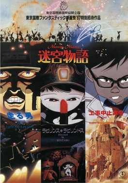

| Neo Tokyo / Manie-Manie | |
|---|---|
| Trailer | Original Poster |
|  | |
|
- Plot : The 50 minute-long film has three segments,
each under a different screenwriter and film director : Rintaro's "Labyrinth Labyrinthos", an exploration into the maze of a little girl's mind, Yoshiaki Kawajiri's "Running Man", focusing on a deadly auto race, and Katsuhiro Ōtomo's "Construction Cancellation Order", a cautionary tale about man's dependency on technology. - Segment by Kawajiri : The Running Man (n°2) - Japenese title : 迷宮物語 - Genre : Science-Fiction / Fantasy - Directed by : Rintaro / Yoshiaki Kawajiri / Katsuhiro Otomo - Music by : Mickie Yoshino (full OST > HERE) - Running time : 50min - Production : Madhouse animation studio - Release date : 25 September 1987 |
|